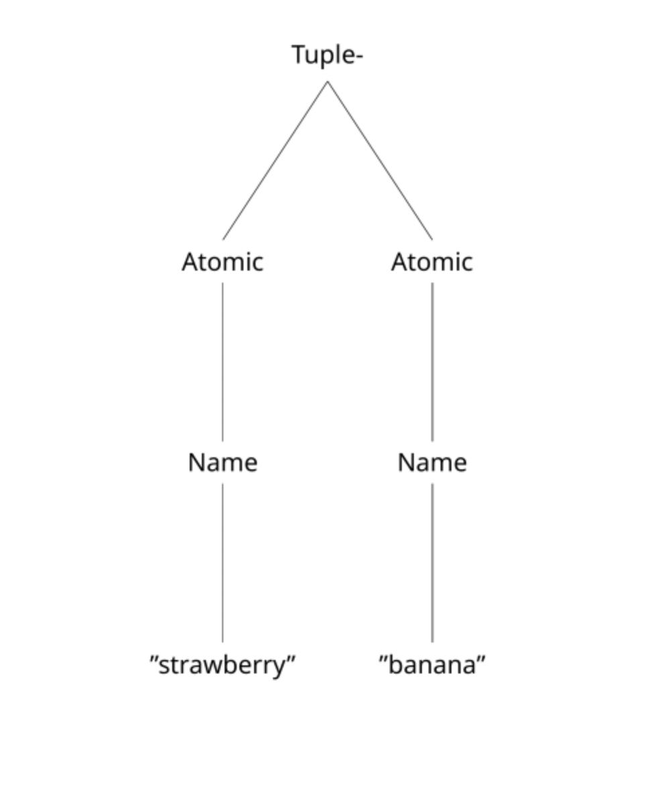

Now that we have representations, what do we do with them?
Overview of this Section
In this section we will broadly discuss how to represent interpretation in programming languages encoded high-dimensional vector space. In order to work up to this point, first we will discuss some problems with the memory capacity of VSAs: specifically, how we can get around information-loss as a result of VSA operations by using associative memories. Then, we will discuss other ways of representing syntax. Finally, we will talk about what is interpretation and program execution by thinking about a way of talking about how programs work: denotational semantics. We will then apply this knowledge to another toy language, the LET language.
Associative Memories and Pointers
Recall our previous example of encoding the simple language \(\mathcal{L}_\text{fruit}\) in high-dimensional vectors. We found that we can both encode the abstract syntax into the high-dimensional vectors using VSA operations, as well as decode them.
But, as we will show, the decoding breaks down with even \(1\)-deep nesting of syntax. We say that a composite expression \(\phi\) is \(n\)-deep by counting the longest length of composite sub-expressions that it contains. Atomic expressions are \(0\)-deep. Ideally, for languages which are compositional, we would like for any syntactic expression to be able to be arbitrarily deep. So, we could have a tuple of tuples of tuples of tuples, etc. But, because of the information loss inherent in VSA operations, we quickly find that without some indirection, this becomes untenable.
from dataclasses import dataclassfrom abc import ABCMeta@dataclassclass L(metaclass=ABCMeta):"""Abstract base class of our language L."""pass@dataclassclass Atomic(L):"""Abstract base class of atomic elements in the language.""" name: str@dataclassclass Tuple(L):"""Tuples in L.""" lhs: L rhs: L@dataclassclass Disjunction(L):"""Disjunctions in L.""" lhs: L rhs: Ldim =1_000T = ["atomic", "tuple", "disjunction"]R = ["tag", "name", "lhs", "rhs"]A = ["strawberry", "banana", "apple"]codebook = Codebook(T + R + A, dim=dim)def encode(expr: L, codebook: Codebook = codebook) -> HRR:"""Encode a formula in the language $\mathcal{L}_{\text{fruit}}$."""ifnotisinstance(expr, L):raiseTypeError("Expected a subclass of L", expr)ifisinstance(expr, Atomic): name = expr.namereturn role_filler_pair( {"tag": "atomic","name": codebook[name], }, codebook=codebook, )elifisinstance(expr, Tuple): lhs = expr.lhs rhs = expr.rhsreturn role_filler_pair( {"tag": "tuple","lhs": encode(lhs, codebook=codebook),"rhs": encode(rhs, codebook=codebook), }, codebook=codebook, )elifisinstance(expr, Disjunction): lhs = expr.lhs rhs = expr.rhsreturn role_filler_pair( {"tag": "disjunction","lhs": encode(lhs, codebook=codebook),"rhs": encode(rhs, codebook=codebook), }, codebook=codebook, )def decode(enc: HRR, codebook=codebook, theta: float=0.2) -> L:"""Decode a representation back to ``L``.""" tag = enc.bind(codebook["tag"].inverse()) t_atom = codebook["atomic"] t_tuple = codebook["tuple"] t_disj = codebook["disjunction"]if tag.cosine_similarity(t_atom) > theta: name = enc.bind(codebook["name"].inverse())# Recall the name from the codebook keys, values =zip(*codebook.items()) V = np.array(values) sims = V @ name argmax = np.argmax(sims)return Atomic(keys[argmax])else:# Trick here is that both of the other representations have# an `lhs` and a `rhs`. lhs = enc.bind(codebook["lhs"].inverse()) rhs = enc.bind(codebook["rhs"].inverse()) dec_lhs = decode(lhs, codebook=codebook, theta=theta) dec_rhs = decode(rhs, codebook=codebook, theta=theta)if tag.cosine_similarity(t_tuple) > theta:return Tuple(dec_lhs, dec_rhs)elif tag.cosine_similarity(t_disj) > theta:return Disjunction(dec_lhs, dec_rhs)else:raiseValueError("Unkown value!")# Testing tuples:straw = Atomic("strawberry")apple = Atomic("apple")enc_apple = encode(apple)tupl = Tuple(straw, apple)print(f"Original form: {tupl}")enc_tupl = encode(tupl)dec_tupl = decode(enc_tupl)print(f"Decoded form: {dec_tupl}")print()# Testing one-deep disjunctions# disj = Disjunction(tupl, apple) # Uncommenting this throws errors# print(f"Original form: {disj}")# enc_disj = encode(disj)# dec_disj = decode(enc_disj)# print(f"Decoded form: {dec_disj}")
Original form: Tuple(lhs=Atomic(name='strawberry'), rhs=Atomic(name='apple'))
Decoded form: Tuple(lhs=Atomic(name='strawberry'), rhs=Atomic(name='apple'))
Even with a simple \(1\)-deep expression, our decoding function is unable to parse out that the left-hand side of enc_disj is a tuple. The key problem here is that we can think of VSA operations as a kind of information compression. Specifically, binding leads to a loss of information, and this loss depends on the kind of binding operation that we use (Kelly et al., 2013).
To solve this problem, we need to be able to add (1) indirection into the representation, allowing for the information to be preserved even under many binding operations, (2) a way to “clean-up” or “clarify” noisy representations, gravitating them back to their original form.
To do this, we use associative memories, which are distributed, content-addressable memories that recontsruct queries based on stored information in their weights. Associative memories are well-suited for our high-dimensional representation as they are continuous and differentiable as well.
Creating a Cleanup and Associative Memory
For more intuition here, we will be creating both a cleanup and associative memory. A cleanup memory \(\mathcal{C}\) is an auto-associative memory which stores \(N\) high-dimensional vectors of dimension \(D\). If \(x\) is a high-dimensional vector stored in the weights of \(\mathcal C\), then \(\mathcal C(x) \approx x\). If \(x'\) is a degraded form of a stored memory item in \(C\), then \(\mathcal C(x') \approx x\), where \(x\) is the original form of the memory item. Cleanup memories are useful for recovering the original form of bound variables.
The next associative memory that we will be using is a hetero-associative memory \(\mathcal D\) that stores \(N \times N\) items, or \(N\) addresses of high-dimensional vectors and \(N\) patterns of high-dimensional vectors. We write to memory both an address vector and a pattern vector. If \(x\) is a high-dimensional vector stored in the addresses in \(\mathcal D\), and \(y\) is the a high-dimensional vector stored in the patterns of \(\mathcal D\) associated with \(x\) (i.e., the row in both the pattern and address matrix is the same), then \(\mathcal D(x) \approx y\). If \(x'\) likewise is a degraded form of \(x\), and \(y\) the stored pattern for \(x\), then \(\mathcal D(x') \approx y\).
class CleanupMem:"""Simple clean-up memory."""def__init__(self, dim: int, init_capacity: int=20) ->None:# The dimensionality of the dataself.dim = dim# The current capacity of the memoryself.capacity = init_capacity# The number of stored tracesself.stored_traces =0# The weight matrixself.W = np.zeros(shape=(init_capacity, dim))def write(self, x: np.ndarray) -> np.ndarray:"""Write a value to memory."""ifself.stored_traces >=self.capacity:self.W = np.concatenate([self.W, np.zeros((self.capacity, self.dim))])self.capacity *=2self.W[self.stored_traces, :] = xself.stored_traces +=1return xdef read(self, x: np.ndarray) ->tuple[np.ndarray, np.ndarray]:"""Read a value from memory, returning the value and its recalled form""" similarities =self.W @ x max_sim_idx = np.argmax(np.abs(similarities)) recalled =self.W[max_sim_idx]return x, recalled.view(HRR)def__call__(self, x: np.ndarray) ->tuple[np.ndarray, np.ndarray]:returnself.read(x)class AssocMem:def__init__(self, dim: int, init_capacity: int=20) ->None:self.dim = dimself.capacity = init_capacityself.stored_traces =0# addressesself.A = np.zeros((self.capacity, self.dim))# patternsself.P = np.zeros((self.capacity, self.dim))def write(self, x: np.ndarray, y: np.ndarray) ->tuple[np.ndarray, np.ndarray]:"""Associate `(x, y)` in memory, returning the values."""ifself.stored_traces >=self.capacity:self.A = np.concatenate([self.A, np.zeros((self.capacity, self.dim))])self.P = np.concatenate([self.P, np.zeros((self.capacity, self.dim))])self.capacity *=2self.A[self.stored_traces, :] = xself.P[self.stored_traces, :] = yself.stored_traces +=1return x, y.view(HRR)def read(self, x: np.ndarray) ->tuple[np.ndarray, np.ndarray]:"""Read `x` from memory, returning the `x` and the resulting value.""" similarities =self.A @ x max_sim_idx = np.argmax(np.abs(similarities)) recalled_pattern =self.P[max_sim_idx]return x, recalled_pattern.view(HRR)def__call__(self, x: np.ndarray) ->tuple[np.ndarray, np.ndarray]:returnself.read(x)
Let’s see how these work. For the cleanup memory, we should be able to degrade a value and still be able to retrieve the original form.
dim =400X = random(10, dim)cleanup_mem = CleanupMem(dim=dim)for x in X: cleanup_mem.write(x)# Test regular recallx = X[1].squeeze()_, x_hat = cleanup_mem(x)print(f"Cosine sim between x and x_hat: {x.cosine_similarity(x_hat)}")x_degraded = X[1].bind(X[0]).bind(X[2]).bind(X[0].inverse()).bind(X[2].inverse())_, x_deg_hat = cleanup_mem(x_degraded)print(f"Cosine sim between x and x_deg_hat: {x.cosine_similarity(x_deg_hat)}")
Cosine sim between x and x_hat: 1.0
Cosine sim between x and x_deg_hat: 1.0
Likewise, we should be able to recall arbitrary associated values even under degradation.
dim =400A = random(10, dim)P = random(10, dim)assoc = AssocMem(dim)for a, p inzip(A, P): assoc.write(a, p)a = A[1]p = P[1]_, p_hat = assoc(a)print(f"Cosine sim between target pattern and recalled pattern: {p.cosine_similarity(p_hat)}")a_degraded = A[1].bind(A[0]).bind(A[2]).bind(A[0].inverse()).bind(A[2].inverse())_, p_deg_hat = assoc(a_degraded)print(f"Cosine similarity between target pattern and recalled pattern from degraded value: {p_deg_hat.cosine_similarity(p)}")
Cosine sim between target pattern and recalled pattern: 1.0000000000000002
Cosine similarity between target pattern and recalled pattern from degraded value: 1.0000000000000002
Applying memories to encoding and decoding
Now that we have an associative memory and a cleanup memory, how do we apply it to decoding so that we can preserve information? Recall that role-filler pair encodings for syntactic forms has some degradation of information, especially whenever we have multiple binds and superpositions. Therefore, for each new role-filler pair that we create, what we will do is create a reference. We say that a fresh, random vector \(p\) is a reference for some high-dimensional vector \(x\) if \(p\) is arbitrary and unrelated with \(x\), and we associate \(p\) with \(x\) in associative memory.
We also can store the contents of role-filler pairs in cleanup memory. This helps further with the preservation of information in role-filler pairs. Figuring out when and when not to use these methods of indirection unfortunately has no real theory behind it. Rather, it is a practical decision made whenever we notice lots of information loss.
Furthermore, instead of using explicit tag roles, what we will do is explicitly superpose the role-filler pair of the contents of the syntax with the tag itself. This let’s us do easier comparison, as well as further limits the possiblity of information loss.
Is the encoded `straw` atomic?: 0.7015074268173801
# Testing tuplesbanana = Atomic("banana")enc_banana = encode_with_references( banana, codebook=codebook, assoc_mem=assoc_mem, cleanup=cleanup_mem)t = Tuple(straw, banana)ptr_t = encode_with_references( t, codebook=codebook, assoc_mem=assoc_mem, cleanup=cleanup_mem)print(f"Is the pointer a tuple?: {ptr_t.cosine_similarity(codebook['tuple'])}")_, deref_t = assoc_mem.read(ptr_t)print(f"Is the derefenced tuple a tuple?: {deref_t.cosine_similarity(codebook['tuple'])}")lhs = deref_t.bind(codebook["lhs"].inverse())_, lhs = cleanup_mem.read(lhs)print(f"Similarity between lhs and atomic: {lhs.cosine_similarity(codebook['atomic'])}")print(f"Is the lhs a strawberry?: {lhs.bind(codebook['name'].inverse()).cosine_similarity(codebook['strawberry'])}")
Is the pointer a tuple?: -0.012625734991703514
Is the derefenced tuple a tuple?: 0.5754711851450405
Similarity between lhs and atomic: 0.7015074268173801
Is the lhs a strawberry?: 0.5825174657553933
Decoding
Now that we’ve preserved the information more using indirection, we can also have an easier time in decoding compound representations.
t = Tuple(straw, banana)t_nest = Tuple(t, t)ptr_t = encode_with_references( t_nest, codebook=codebook, assoc_mem=assoc_mem, cleanup=cleanup_mem)_, deref_t = assoc_mem.read(ptr_t)_, lhs_ptr = cleanup_mem.read(deref_t.bind(codebook["lhs"].inverse()))_, deref_lhs = assoc_mem.read(lhs_ptr)print(f"Is the left-hand side a tuple?: {deref_lhs.cosine_similarity(codebook['tuple'])}")
Is the left-hand side a tuple?: 0.5754711851450405
Implementing decoding the forms with indirection is left as an exercise for the reader. It is always important to remember: you can not be sure that a value that you have is an atomic value that isn’t the result of some kind of indirection. Therefore, one must always be wary of testing for whether the value is atomic. To do so, one can simply test whether some high-dimensional encoded vector is sufficiently similar to the atomic tag. Otherwise, you can treat it as a reference, and dereference it from memory.
def decode_with_references( enc: HRR, codebook: Codebook, assoc_mem: AssocMem, cleanup_mem: CleanupMem,) -> L:"""Decode from our novel encoding with references.""" ...
Alternative Representations of Syntax
Role-filler pairs are not the only way to represent the abstract syntax of a language. VSAs are able to express really any useful data structure that one could desire: the question then becomes, what is the most useful for the project itself. Aside from role-filler pairs, we can also represent the abstract syntax as trees or sequences. The two main strategies for representing these structures are either some iteration of role-filler pairs.
Trees
The abstract syntax of a language can be represented as a tree using a data structure called a sparse coordinate tree(Soulos, et al., 2024). The representation uses two codebooks for content, the \(C = [c_1, c_2, \dots, c_N]\) and position: \(P = [p_1, p_2, \dots, p_M]\). Each \(p_i\), \(i = 1, \dots, M\) denotes \(M\) possible coordinates within the tree. Soulos, et al. have some indexing information in the position vectors \(p_i\), but as long as they are sufficiently distinct they can be anything. Another possible option is to use the set of permutations of some base vector \(p_1\), and the other vectors as: \[
\begin{align*}
p_2 &= \mathcal{P}^1(p_1), \\
p_3 &= \mathcal{P}^2(p_1), \\
&\vdots \\
p_m &= \mathcal{P}^{(m-1)}(p_1),
\end{align*}
\tag{1}
\] where \(\mathcal{P}^n(\cdot)\) denotes the \(n\)-th permutation of the vector argument.
Permutations can also be used to “protect” information. Recall that binding creates a new vector which is orthogonal to the operands of the binding. Therefore, if we bind each filler with \(n\) permutations of a role, then we create a new and highly uncorrelated vector that is uniquely recoverable by taking the inverse of the bind with the \(n\) permutation vectors.
This encoding scheme is intimately related with the tagged unions that tactic that we use above. Instead of using distinct roles for the attributes of the abstract syntax, instead they use an agnostic representation that represents the abstract syntax as tree.
Consider the following tree: 
With our tagged union representation, this is: \[
t_\text{rf} = \texttt{tuple} \oplus (
(\texttt{lhs} \otimes (\texttt{atomic} \oplus (\texttt{name} \otimes \texttt{strawberry}))) \oplus
(\texttt{rhs} \otimes (\texttt{atomic} \oplus (\texttt{name} \otimes \texttt{banana})))
)
\tag{2}
\] For our positional encoding, let us assign the positions left-hand side first, so the top of the tree is \(p_1\), going down the left hand branch we have \(p_2, p_3, p_4\), and the right hand side \(p_5, p_6, p_7\). The representation would be: \[
\begin{align*}
t_\text{pos} &= p_1 \otimes \texttt{tuple} \oplus p_2 \otimes \texttt{atomic} \oplus \\
&p_3 \otimes \texttt{name} \oplus p_4 \otimes \texttt{strawberry} \\
&p_5 \otimes \texttt{atomic} \oplus p_6 \otimes \texttt{name} \\
&p_7 \otimes \texttt{banana}.
\end{align*}
\tag{3}
\] This naive representation will of course be subject to problems of noise. But, there are smarter ways of doing this positional encoding. For example, another tree representation from Frady, et al. (2020) is to use permutations of a left and a right base vector.
Lists
Similar to the tree representation, we can use a sort of linked-list structure for encoding the syntax. In this approach, we simply have a codebook of structural roles: \(\texttt{left}\), \(\texttt{right}\), the empty list indicator \(\texttt{nil}\), and a list marker \(\varphi\), accompanied with a codebook of values that we wish to have as elements.
Encoding atomic symbols remains a simple mapping from the symbol to the codebook. However, for non-atomic structures (composite expressions), we can concatenate the elements into a list by using the \(\mathsf{cons}\) operation: \[
\mathsf{cons} (x, y) = (\texttt{left} \otimes x) \oplus (\texttt{right} \otimes y) \oplus \varphi.
\tag{4}
\] A singleton list is represented as \(\mathsf{cons}(x, \texttt{nil})\). This allows us to simply iterate through the list until by retrieving the \(\texttt{left}\) item, performing our operation, and then treating the retrieved value from the \(\texttt{right}\).
Like our tagged-union representations these unfortunately are plagued with problems of noise. So, we must unfortunately enter \(x\) and \(y\) into cleanup memory to enhance recall. Given the ease of this representation, we will be using this for encoding abstract syntax. We’ll see an example below of how this works in practice. Before that, however, we must end our detour and talk about what programs mean: semantics.
It’s just semantics
Semantics is, broadly, the study of what some language means. In natural language, the semantics investigates how the meaning of words makes a difference in how we can use them and what we do with them. For example, the famous sentence: “Colorless green ideas sleep furiously” is syntactically correct, but there is a different sense to why it seems wrong. There’s something about the words themselves that makes it a bad kind of sentence.
In the same way that we can talk about the meaning of words in natural language, the study of semantics extends to formal languages as well. In fact, semantics for natural language finds it origin in thinkers like Richard Montague (1930-1971), who claimed that there was no intrinsic difference between natural and artificial languages. So, we could use the tools for the latter on the former.
Programming language semantics provide a way for us to describe how we intend the programming language to work. Usually, we proceed with a higher-level description of the general “shape” of how things are supposed to work. The job of compilers and interpretation is to implement these semantic rules as faithfully as possible. The reason that we provide a high-level and abstract definition of the semantics of programming languages is because we want to leave room for the writers of compilers and interpreters to perform optimizations. If our language standard, that is the document which formally describes the language in total, requires that the language have a very specific and inefficient implementation, implementers would have to break with the standard to make something fast and useful. But this would just be a violation of what it means to be a language standard (something that all implementations ought to follow).
Designing a denotation
Given a language \(\mathcal{L}\), typically described by a list of syntactic roles, designing the semantics of the language requires us to define a function that, on the basis of the syntax of the language, assigns some meaning or denotation to the syntax.
To put it in simpler terms, we need to provide a function that maps from the syntax of \(\mathcal{L}\) to some other domain that captures the essential properties of \(\mathcal{L}\). We call this function the denotation function, denoted by \(\| \cdot \|\).
A denotation for \(\mathcal{L}_\text{fruit}\)
To provide an intuition here, suppose that \(\mathcal{L}_\text{fruit}\) is a programming language, and we want to design a semantics for this programming language. Of course, this language wouldn’t be very useful, except for describing collections of strawberries, bananas, and apples. But, it is good practice to begin to grasp what it takes to make a denotation.
To begin, we have to proceed recursively over the inductive definition of \(\mathcal{L}_\text{fruit}\). By defining the denotation in terms of atomic elements as a base case, and then composite elements, we are following something known as the principle of compositionality: namely, that the meaning of an expression in the language \(\mathcal{L}_\text{let}\) is determined the meaning of the parts of the expression.
Let \(\mathcal{M}_\text{fruit}\) be a set called the model of \(\mathcal{L}_\text{fruit}\). The denotation function \(\| \cdot \|\) maps from elements in \(\mathcal L_\text{fruit}\) to elements in \(\mathcal{M}_\text{fruit}\). To begin, we need to populate \(\mathcal{M}_\text{fruit}\). First, we need to have elements that correspond with the atomic elements of \(\mathcal{L}_\text{fruit}\). Let \(\mathsf{strawberry}\), \(\mathsf{apple}\), and \(\mathsf{banana}\) be three elements in \(\mathcal{M}_\text{fruit}\). We can distinguish between elements in \(\mathcal{M}_\text{fruit}\) and atomic elements in \(\mathcal{L}_\text{fruit}\) by the lack of serifs. The denotation of atomic elements is thus: \[
\begin{align*}
\| \texttt{apple} \| &= \mathsf{apple}, \\
\| \texttt{banana} \| &= \mathsf{banana}, \\
\| \texttt{strawberry} \| &= \mathsf{strawberry}.
\end{align*}
\tag{5}
\]
Next, we have to populate the composite expressions. For tuples, we will say that (1) the denotation of the left-hand side is in \(\mathcal{M}_\text{fruit}\), (2) the denotation of the right-hand side is in \(\mathcal{M}_\text{fruit}\), and (3) that the set of \(\{\|\text{lhs}\|, \{\|\text{lhs}\|,~\|\text{rhs}\|\}\}\) is in \(\mathcal{M}_\text{fruit}\) (the set encoding of a tuple): \[
\begin{align*}
\| (x, y) \| = \{ \| x \|, \{ \| x \|, \|y\|\}\}.
\end{align*}
\tag{6}
\]
Real-world example
A real-world example of how actual language specifications define the operational semantics of a language is the R5RS Standard for Scheme.
The LET Programming Language
Now that we have an understanding of representing the syntax of programming languages, as well as the semantics, let’s work out a toy example.
The LET Programming language (Friedman & Wand, 2008; Ch. 3) is a toy language that contains: simple expressions like addition and subtraction, testing whether or not an item is \(0\), function application, conditional evaluation, and variable binding using let expressions.
Let \(\mathcal{L}_{\text{let}}\) be the language defined by the following BNF specification:
<program> ::= <expression>
<expression> ::= <number>
| -(<expression>, <expression>)
| zero? (<expression>)
| if <expression> then <expression> else <expression>
| <identifier>
| let <expression> = <expression> in <expression>
@dataclassclass Expression(metaclass=ABCMeta):"""Abstract base class of Let expressions."""pass@dataclassclass Number(Expression):"""Number expressions.""" num: int@dataclassclass Identifier(Expression):"""Identifier expressions.""" var: str@dataclassclass IsZero(Expression):"""zero?""" exp1: Expression@dataclassclass If(Expression):"""If expressions.""" exp1: Expression exp2: Expression exp3: Expression@dataclassclass Let(Expression):"""let expressions.""" var: str exp1: Expression body: Expression@dataclassclass Diff(Expression):"""Difference expressions""" exp1: Expression exp2: Expression
Next, we define our encoding function. We’re going to use the list encoding that we talked about earlier. Numbers and identifiers will be atomic expressions. For numbers, we’re going to cheat a little bit by keeping an varying size array of “scalar vectors” around, called it \(\mathcal{I} = [i_0, i_1, \dots]\). The encoding for some number \(n\) will just be \(i_n\). We will then superpose this representation with a tag \(\texttt{num}\).
For composite expressions, we will use a list encoding. The first element of the list will be a tag denoting what kind of expression it is. These can be either \(-\), \(\texttt{let}\), \(\texttt{if}\), or \(\texttt{zero?}\).
Identifier(var='foo')
Number(num=np.int64(3))
IsZero(exp1=Identifier(var='foo'))
Original expression: Diff(exp1=Number(num=3), exp2=Number(num=3))
Diff(exp1=Number(num=np.int64(3)), exp2=Number(num=np.int64(3)))
Original expression: Diff(exp1=Number(num=3), exp2=Number(num=3))
If(exp1=Number(num=np.int64(3)), exp2=IsZero(exp1=Identifier(var='foo')), exp3=Diff(exp1=Number(num=np.int64(3)), exp2=Number(num=np.int64(3))))
Original expression: Let(var='bar', exp1=IsZero(exp1=Identifier(var='foo')), body=Diff(exp1=Number(num=3), exp2=Number(num=3)))
Let(var=Identifier(var='bar'), exp1=IsZero(exp1=Identifier(var='foo')), body=Diff(exp1=Number(num=np.int64(3)), exp2=Number(num=np.int64(3))))
The Semantics for \(\mathcal{L}_\text{let}\)
The semantics of \(\mathcal{L}_\text{let}\) require us to provide some function and set definitions. We will list them below, and then we will informally discuss what they are and what they do: